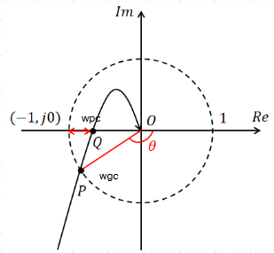
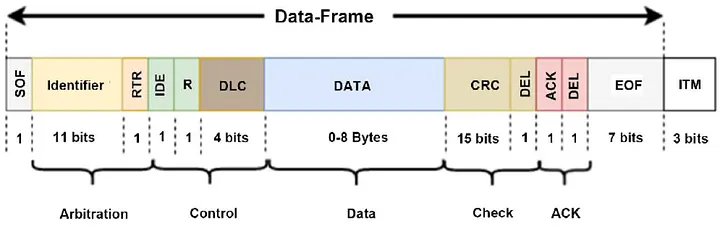

Technical Articles.
Designing PID Controllers Using the Nyquist Plot
A practical frequency-domain method for choosing PI, PD, or PID parameters from a desired open-loop point in the complex plane.
April 28, 2026

CAN Bus Basics to Advanced
From frame layout and arbitration to practical debugging, filtering, timing, and field reliability.
April 16, 2026

Object Dictionary
Understanding the Object Dictionary, SDOs, and PDOs in industrial automation systems.
April 17, 2026

Understanding CPU Architectures in Embedded Systems
A practical introduction to ARM, x86, and RISC-V, and why CPU architecture matters in STM32-based development.
April 20, 2026